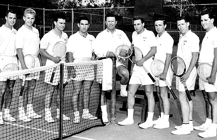
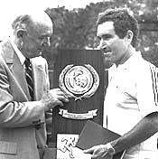
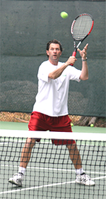
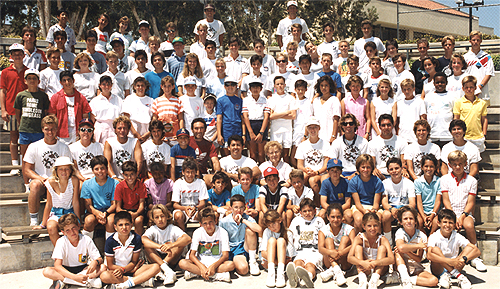

Previous: Concentration | 🏠 Mental Game Home | Next: Crushing the Breaker
Conversations with Dr. Fox: An Advanced Degree in Tennis Theory
Keith Hayes
It all started at Pepperdine in 1984.
Shrewd. I think that word actually landed me the job. In 1984, I was a freshman at Pepperdine University. During my second semester, I learned that Dr. Allen Fox - head coach of the Pepperdine men's tennis team, a former world - class player, a Ph.D. in psychology, and a published author - was looking for counselors to work at his summer tennis camp.
While my experience as a tennis instructor was limited - I'd worked as a counselor the previous summer at another camp (name withheld) and was not asked to return - I still considered myself a fine candidate for the position. And so, because I could, I strolled right up to the courts and introduced myself to Dr. Fox.
Dr. Fox looked me up and down. Especially down. In honor of the occasion, I'd worn my finest jeans - the ones I'd carefully bleached to be white below the knees. Seeing that these unique pants had made a powerful impression on Dr. Fox, I felt emboldened to offer my services right on the spot. Dr. Fox listened to my spiel, and, still staring at my pants, made it clear that he wasn't in the market for a former high school journeyman to round off his otherwise impressive staff. Unfazed, I held my ground. Dr. Fox listened for another minute or two and then suggested I go home and state my case in writing.
Sure, he was just trying to get rid of me, but I kept hope alive. I returned to my dorm and crafted the most thoughtful and persuasive letter my 19 - year - old brain could compose. Though I spelled out my qualifications in glorious detail, my closing paragraph was the clincher. There, I deemed Dr. Fox "a shrewd judge of human character," confidently assuring him he'd make a wise decision regardless of whom he hired. A few days later, Dr. Fox shrewdly signed me on as the final member of the 1984 Allen Fox Tennis Camp staff.

Allen Fox, fourth from left in his college playing days at UCLA.
Enlightenment
Working for Dr. Fox was like entering a whole new realm. While I fancied myself an elegant striker of the ball, I soon discovered how little I really knew about tennis. Every evening at five o'clock, the entire camp would gather in the bleachers while Dr. Fox gave what he called a "strategy talk." While these tidy ten-minute sermons did include strategy, the term "strategy talk" could hardly begin to describe them. No, these brief presentations, each delivered seamlessly with logic, wit and style, were downright lessons in life - part instruction and part philosophy. Little did the 8- to 16-yearold campers know it, but Dr. Fox was revealing hidden truths - secrets that, if applied wisely, could actually shape their destinies.
For instance, there was the "Water Fight" speech. "Most tennis matches," Dr. Fox would explain, "are like water fights in a pool. The only way to win one is to keep on splashing until the other guy quits."
Of course, we all laughed at the simple analogy, but then I remembered my undistinguished high school career. How many times had I given up "splashing" because I'd grown weary or disenchanted? How many times had I actually quit trying because - like a water fight - things were becoming mildly unpleasant? Who knows? Maybe I believed that if I chose to quit, I wouldn't really be "losing." Suddenly, I stopped laughing and started listening.
Then, there was the "Expecting to Fly" speech. "How many of you," Dr. Fox would ask, pointing to the top of a nearby hill, "think you could stand there, start flapping your arms" (he'd flap his arms for emphasis) "and then fly down here to the tennis courts?" More laughter.
"Would you be surprised if you couldn't? Dr. Fox would ask. "Would it make you mad?" More laughter. "All right, then," he'd continue, "how many of you think you can play an entire tennis match without missing any easy balls? Without your opponent hitting any lucky winners?"
Again, I thought about my own game. For years, I'd been honing my prodigious strokes only to forfeit untold points - let alone matches - on account of my temper. I'd practice my backhand or my serve all week long and then throw away the better part of a match because I'd allowed a missed line call, an untimely let-cord, or some other perceived injustice to get the better of me. In my delusional state - in my fantasy - I'd honestly believe that these things shouldn't happen to me.
Then, there was the "Excuse Makers" speech, a true Allen Fox classic. "How many of you," Dr. Fox would ask, "consider yourselves excuse makers?" Silence.
Dr. Fox would then turn the question around. "How many of you know any excuse makers at this camp?" Of course, all hands would go up. "Okay," he'd continue, "tell me a few excuses you've heard since you've been here."
"The sun was in my eyes!"
"I had a blister!"
"I got dehydrated!"
"She cheated!"
"A plane flew over right as I was about to serve!"
"I had an off day!"
And so on. Once he'd heard enough, Dr. Fox would ask another question.
"Why do you suppose people make excuses?"
"Because they don't want to look bad?"
"Right!" Dr. Fox would say. "Now, how do excuse makers really look? Do they look better? Do you even care why your opponent lost?" Again, I looked within - and beheld a certified excuse maker. Why, I suddenly wondered, would my bad wrist only hurt when I started losing? And did a sore wrist necessarily mean I had to lose? While I'd always thought I wanted to win, I now realized that the prospect of trying my hardest and perhaps losing anyway was terrifying to me. As defeat seemed more likely, "loser's limp" would inevitably creep in.

Dr. Fox led the Waves to an NCAA team runner up finish twice, here receiving the trophy from former Secretary of State Dean Rusk.
But the most devastating of all was Dr. Fox's famous "Dinker" speech. "How many of you," he'd ask, "have ever played a dinker? You know, someone who just runs down every ball and lobs it back over?" All hands would go up, accompanied by a chorus of groans. "Do you enjoy playing dinkers?" Dr. Fox would ask.
More groans. "Why not?" he'd ask. "Because it's boring!" "Because they're scared to come to the net!" "Because they never miss!" "Because it isn't real tennis!" "Because they suck!"
Dr. Fox would listen patiently until the campers were through. "You don't like playing dinkers," he'd calmly suggest, "because they beat you. They beat you, don't they?"
Ouch! Enough already!
I thought of my own experiences with dinkers - how I hated them, and how their boring, conservative, and unspectacular style could invariably drive me to madness. In my mind, I was convinced that dinking was inherently wrong and immoral. Even though dinking was actually safer, smarter, and, obviously, more effective than my own reckless strategies - if strategies they could be called - because I couldn't beat dinkers, I perceived them as "bad."
While I carefully concealed my feelings, I wanted to crawl under a rock. How could this man who knew so little about me know so much about me? Shrewd judge of human character, my foot. This mysterious Dr. Fox had a window straight into my soul! Suddenly, I felt unworthy of the title "tennis instructor." Who was I kidding? I was no tennis teacher. I was a hollow sham.

Dr. Fox I found had a window straight into my soul.
Preaching
Once I'd hit rock bottom, I decided to keep my mouth shut and soak up all the wisdom I could. Every word uttered by Dr. Fox seemed so obvious and true - almost ridiculously so - yet none of it had ever dawned on me before. In time, I became Dr. Fox's most ardent disciple, zealously preaching the gospel to anyone who'd listen. While watching the campers play, I repeatedly witnessed his truths in action. During matches, the kids who consistently hit the ball deepest into their opponents' courts - no matter how high or soft - would win every time. Those who scrambled hardest and fought to get the most balls back would invariably beat the lazier kids with more talent and better strokes. Generally speaking, the calmer a kid remained, the crazier his opponent would get.
On a personal level, I experimented with Dr. Fox's theories during my own matches with fellow counselors. With each new opponent, I could feel myself improving. Duly enlightened, I figured there was no limit to how good I could be on a tennis court. If I combined my newfound mental and strategic skills with the textbook strokes I'd worked so long and hard to develop, I felt I'd be unstoppable.
The Moment of Truth
Dr. Fox gradually took a liking to me. Of all his counselors, I was clearly the most dedicated and devout. Perhaps more grateful to be in this position than my colleagues, I took the whole thing quite seriously - right down to the most arbitrary and seemingly irrelevant commands, like making my bed each morning, tucking in my shirt, or walking around the campus instead of through it. Apparently, Dr. Fox was developing a deep and genuine respect for me and my tennis game.
Proof of his admiration came one day toward the end of the summer, when he approached me with a proposition.
"Hey, Keith," Dr. Fox said cheerfully. "Yes?" "You think you could beat me if I played left-handed?"
Gulp. Why was he asking me this? On one hand, I was offended; on the other hand, knowing Dr. Fox, I felt certain he wouldn't have challenged me if he didn't believe he could win. "I hope so," I answered, meaning to sound more confident than I actually did.
The remote Pepperdine Courts where Dr. Fox taught me his greatest lesson.
With that, Dr. Fox led me to one of Pepperdine's more remote tennis courts, and we played. Since I'd seen him play left-handed before, I knew he had a terrible serve. My strategy was to let him serve first and then mercilessly attack his feeble delivery. Once I broke Dr. Fox's serve, it was simply a matter of holding my own, and the match would be mine. That, I reasoned, would teach him not to challenge me left-handed again. The first point of our match went according to plan. Dr. Fox hit a weak serve, which I returned hard and deep into a corner. I followed my return up to the net, and Dr. Fox responded with a high lob which missed. So far, so good, I thought. Piece of cake.
The second point was almost the same, except this time Dr. Fox's lob found its target. It wasn't pretty, but it went about fifty feet into the air and was headed straight for my own baseline. I scrambled backwards to hit an overhead, but the ball came plummeting toward me like a cruise missile. I missed badly.
On the third point, I tried the same thing, and Dr. Fox responded with another high lob. I scrambled back again and hit a tentative overhead from deep within my own territory which Dr. Fox chased down and - shrewdly - sent right back into the stratosphere. I managed to put this ball away, but I was tired and even a little dizzy.
How had he done it? Here we were, three points into our set, and I was already reeling. After missing yet another overhead on the fourth point, I decided that the next time Dr. Fox hit a lob - which, of course, he did on the fifth point - I'd let the ball bounce before I tried to hit it. What I hadn't anticipated was the fact that a lob so high and deep will practically bounce over the back fence if you don't hit it first. Even if I reached the ball before it hit the fence, I'd be too far out of position to do any damage with my shot.
After a few more of these points, my problem became obvious: While Dr. Fox couldn't hurt me offensively, I realized I couldn't hurt him either if he could consistently lob the ball so high and deep.
A few games later, I began to feel like a human yo-yo, running up to the net and back again to track down Dr. Fox's cruelly precise moonballs. Exhausted, I jettisoned the attacking strategy altogether. From then on, I decided, I'd simply stay behind the baseline and out-steady Dr. Fox; I'd turn the match into a water fight! After all, I was 19 and Dr. Fox was about 50. Father Time was on my side. Wasn't he?
How good could this former world class player really be playing left-handed at age 50?
To my horror, Dr. Fox was perfectly willing - delighted, in fact, to trade strokes with me indefinitely. While none of his shots presented a particular threat to me, the man simply would not miss. Every ball I hit, no matter how hard, came floating back deep into my own court. If only I could get closer to the net, I could hit one past Dr. Fox. Unfortunately, whenever I'd try to come forward, he'd counter with another vertigo-inducing lob. Though I managed to keep the score close, Dr. Fox had effectively stripped me of my power. Worst of all, he was dictating the match - controlling every point! - with his wimpy and grotesque left-handed game. The longer we played, the more helpless and frustrated I felt. At one point, I considered throwing my racket, but then I recalled the "Expecting to Fly" speech. Since my enlightenment, I'd understood that racket throwing or any other perceptible display of mental or emotional fragility would only fuel the doctor's raging competitive fire. And so, I kept on fighting.
And fighting. About an hour and a half into our contest, Dr. Fox had finally reached set point. Whatever you do, I told myself, don't give up now! That's just what the man wants! The next point was one of our longest. Just stay calm and wait for an opening...And don't try anything stupid! After about 20 shots, I saw what I perceived to be a small opening and went for a winner. The trouble with the dinking game is that, when a rare opportunity does present itself, one tends to get over-excited and try to do too much - which, of course, I did. My intended winner went out and thus ended our excruciating clash of wills, 7-5 to Dr. Fox.
I stood for a moment and wondered. Had I done everything I could? How many points had I thrown away in frustration? Had I given up "splashing" first? I didn't think I had, but one thing was certain: Dr. Fox definitely never gave up - nor was he about to - and that had shaken me. I shook Dr. Fox's hand and made a conscious effort to avoid making excuses. Inside, though, I was embarrassed and angry. How could I possibly have lost to a 50-year-old who'd been playing left-handed? Especially when I'd seen him play before and known his weaknesses? When he'd already given me explicit instructions on how to handle his style of play?

The Allen Fox Tennis Camp in 1986. In the third row, Allen is 6th from the left and I am fourth from the right.
And then it hit me: Whenever I'd watched Dr. Fox beating the campers left-handed, I always felt a certain smugness. Just look at the shrewd old buzzard, I'd say to myself. He's luring that poor kid right into his slimy trap! As I watched, I could clearly see what was happening on the court, and I understood it perfectly. After all, I'd been spouting the same axioms to the kids all summer - I just didn't think they applied to me. Intellectually, I knew Dr. Fox's concepts inside and out; it just wasn't until I actually got out on a court and lost to him - until I'd been personally dinked to death by the man - that I could internalize his teachings and fully embrace them. Until then, I'd only been dabbling in these theories, toying with them for my own amusement. As humiliating as it was, my loss to Dr. Fox that day was easily the best lesson, the clearest illustration, I've ever been given on a tennis court.
Transformation
I went on to work at the Allen Fox Tennis Camp for four more summers. In 1988, despite my flimsy credentials, Dr. Fox shrewdly assigned me the title of Head Counselor. Meanwhile, during the fall and spring, Dr. Fox and I continued to play on a semi-regular basis - each match its own titanic struggle. In the end, our rivalry turned out about even, but I did feel a perverse pride in seeing the doctor lose his temper once or twice. During that period, I feel that I graduated from poser to player. It's not as if I'd mastered the game or learned all there is to know about tennis; I'd simply taken the first and, as I now understand, most important step toward being a competitor.
And so, thanks to Dr. Fox, I've learned that a good head and a strong heart are more important to tennis - and, really, just about everything - than talent or proper form can ever be. What's ironic is how simple Dr. Fox's message was. For such a brilliant and illustrious guy, nine tenths of what he preached was common sense. You just had to be shrewd to see it.
 |
USPTA instructor Keith Hayes attended Pepperdine University in the 1980s. There, he encountered Head Tennis Coach Allen Fox and became a counselor at his summer tennis camps, beginning a tennis teaching career - and a friendship with Allen - that has continued ever since. After Pepperdine, Keith went to work in the San Francisco Bay Area advertising and graphic design industries. Later he also became an English teacher. As head coach of the Marin Catholic High School women's tennis team, Keith won back-to-back Division II North Coast Section titles in 2008 and 2009. When he's not teaching tennis, Keith continues to work as a freelance writer and designer. In addition to Tennisplayer.net, his stories have also appeared in TENNIS magazine.
|
Previous: Concentration | 🏠 Mental Game Home | Next: Crushing the Breaker